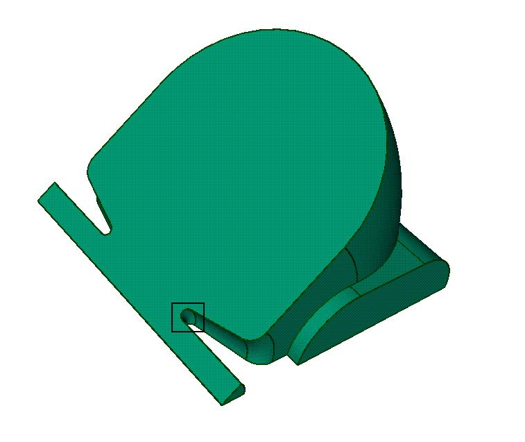
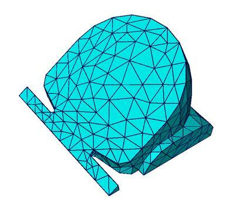
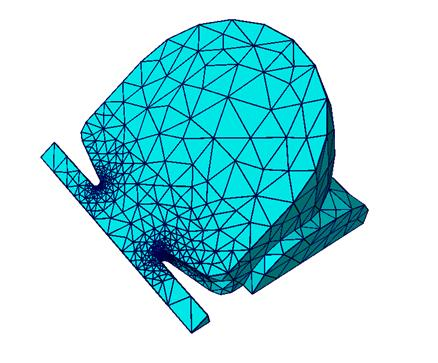
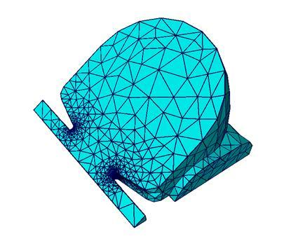
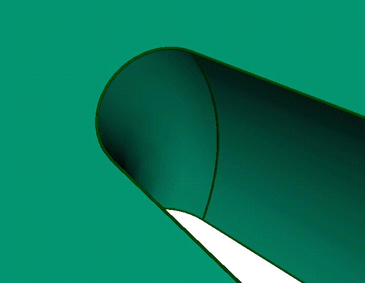
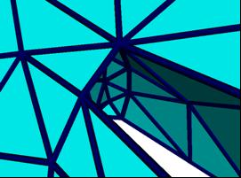
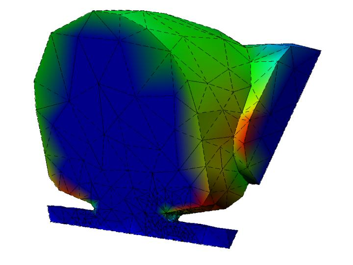
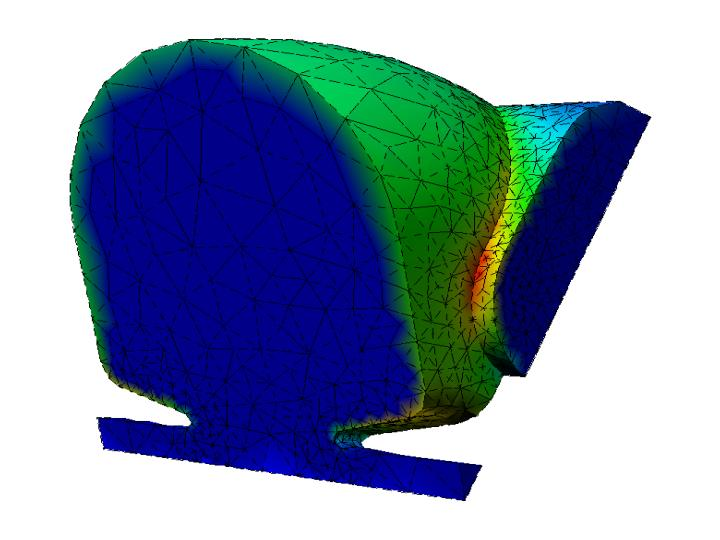
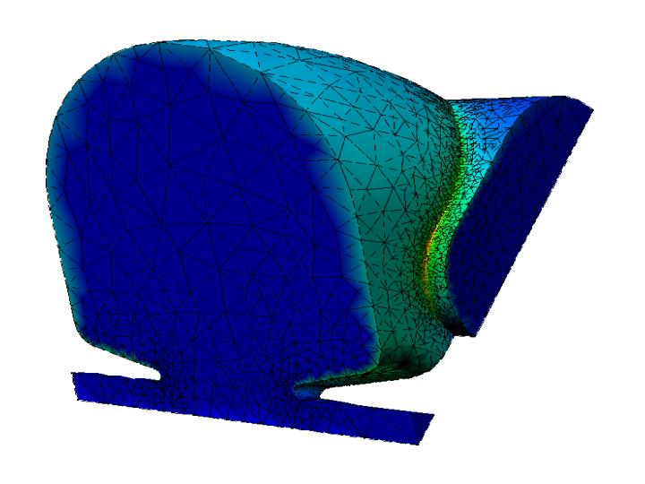

Adaptive Loops
The ITAPS Mesh Adaptation Service has been developed as a service that can be directly integrated with SciDAC analysis procedures to provide adaptive simulations which greatly increase the reliability of the results obtained. The service that has been developed supports generalized mesh adaptation by controlling the mesh to match the given anisotropic mesh metric field defined on the previous mesh of the domain of interest [1,5]. To ensure these methods work with general curved geometries such as those commonly found in CAD representations, the procedures build on a generalized interaction with the geometric model [2] to ensure the mesh properly represents the domain of interest [6]. Since these procedures fully account for the interactions and representation with curved domains [10] they can be extended to support adaptation in which high order spatial discretizations are used [7]. Since the meshes needed by SciDAC applications can be on the order of 100¡Çs of millions of elements, or more, the mesh adaptation service can run in parallel using the same partitioned mesh used by the solver [9,11]. An example of a CAD model and the different levels of mesh refinement are shown in Figure 1. Note that the pictures in the bottom if Figure 1 are zoomed in to show the detail for the model and each mesh. Since these procedures fully account for the interactions and representation with curved domains they can be extended to support adaptation in which high order spatial discretizations are used.| CAD Model | Initial Mesh | Intermediate Adapted Mesh | Final Adapted Mesh |
|---|---|---|---|
|  |  |  |  |
|  |  |
We have demonstrated that adaptive loop technology can be added to existing fixed-grid finite element codes with little to no simulation code modification (see Shephard et. al. for more details). Examples include adaptive loops created using Omega3P which is a fixed mesh simulation code developed at Stanford Linear Accelerator Center and DEFORM which is a commercial black-box fixed mesh simulation code.
| Initial Mesh Simulation Results | Intermediate Mesh Simulation Results | Final Mesh Simulaton Results |
|---|---|---|
|  |  |  |
The mesh adaptation service has been used to develop adaptive simulations for accelerator modeling, fusion and other applications including ones with evolving geometries.
[1]Alauzet, F., Li, X., Seol, E.,S. and Shephard, M.S., Parallel Anisotropic 3D Mesh Adaptation by Mesh Modification, Engng. with Computers, 21(3):247-258, 2006.
[2]Beall, M.W., Walsh, J. and Shephard, M.S, ¡ÈA comparison of techniques for geometry access related to mesh generation¡É, Engineering with Computers, 20(3):210-221, 2004.
[3]Ge, L., Lee, L.-Q., Li, Z., Ng, C., Ko, K., Luo, Y. and Shephard, M.S., ¡ÈAdaptive mesh refinement for high accuracy wall loss determination in accelerator cavity design¡É, Proc. 11th Conf. Electromagnetic Field Computaiton, 2004.
[4]S. C. Jardin, N. Ferraro, J. Breslau, A. Bauer, M.S. Shephard, ¡ÈTwo-fluid Extended-MHD Calculations of Toroidal Equilibrium and Collisionless Reconnection in Magnetized Plasmas¡É, European Physical Society meeting on Plasma Physics, 2007.
[5]Li, X., Shephard, M.S. and Beall, M.W., ¡È3-D Anisotropic Mesh Adaptation by Mesh Modifications¡É, Comp. Meth. Appl. Mech. Engng., 194(48-49):4915-4950, 2005.
[6]Li, X., Shephard, M.S. and Beall, M.W., ¡ÈAccounting for curved domains in mesh adaptation¡É, Int. J. for Numerical Methods in Engineering, 58:246-276, 2003.
[7]Luo, X.-J., Shephard, M.S., O¡ÇBara, R.M., Nastasia, R. and Beall, M.W., ¡ÈAutomatic p-version mesh generation for curved domains¡É, Engineering with Computers, 20(3):273-285, 2004.
[8]Sahni, O. Mueller, J., Jansen, K.E., Shephard, M.S. and Taylor, C.A., ¡ÈEfficient Anisotropic Adaptive Discretization of Cardiovascular System¡É, Comp. Meth. Appl. Mech. Engng., 195(41-43):5634-5655, 2006
[9]Seol, E.S. and Shephard, M.S., ¡ÈEfficient distributed mesh data structure for parallel automated adaptive analysis¡É, Engineering with Computers, 22(3-4):197-213, 2006.
[10]Shephard, M.S., Flaherty, J.E., Jansen, K.E., Li, X., Luo, X.-J., Chevaugeon, N., Remacle, J.-F., Beall, M.W. and O¡ÇBara, R.M., ¡ÈAdaptive mesh generation for curved domains¡É, J. for Applied Numerical Mathematics, 53(2-3)251-271, 2005.
[11]Shephard, M.S. Jansen, K.E. Sahni, O and Diachin, L.A., Parallel Adaptive Simulations on Unstructured Meshes, Journal of Physics: Conference Series, 78-012053, 10 pages, 2007.
[12]Wan, J., Kocak, S. and Shephard, M.S., ¡ÈAutomated adaptive 3-D forming simulation process¡É, Engineering with Computers, 21(1):47-75, 2005.